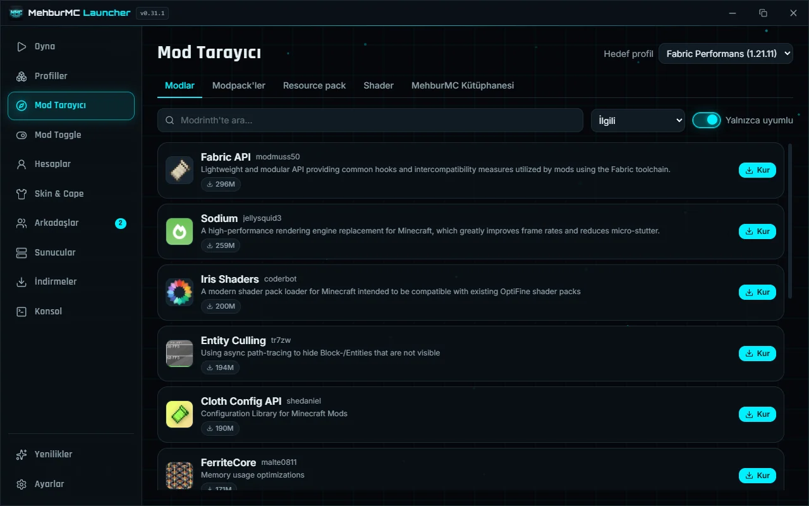

MehburMC Launcher
Windows · Linux
Hafif, reklamsız ve telemetrisiz Minecraft Java Edition launcher'ı.
Modlarını, skinlerini ve arkadaşlarını tek yerden yönet.
- Reklam yok
- Telemetri yok
- Açık kaynak
- Ücretsiz

Özellikler
Oyunu başlatmaktan fazlası: modlar, skinler ve arkadaşların tek pencerede.
-
Profiller
Vanilla, Fabric, Quilt, Legacy Fabric, Forge, NeoForge ve OptiFine. Her profilin kendi mods, saves ve config klasörü var.
-
Otomatik Java
Gereken Java sürümünü (Adoptium Temurin) launcher kendisi indirir. Ayrıca bir şey kurmana gerek yok.
-
Mod Tarayıcı
Modrinth'te mod, modpack, resource pack ve shader ara, tek tıkla kur. Güncellemeleri gör,
.mrpackdosyalarını içe aktar. -
Mod Toggle
Modları tek tıkla aç/kapat, mod grupları oluştur. Bir profilin bütün modlarını başka profile aktar; farklı sürüm için uygun dosyayı Modrinth'ten bulur.
-
Skin & Cape
Skin ve pelerin kütüphanesi, hazır koleksiyonlar, 3B önizlemeli piksel editörü ve toplulukla paylaşma.
-
Arkadaşlar
Arkadaş koduyla ekle, mesajlaş, grup sohbeti kur. 16 kişiye kadar sesli arama, ekran ve mod listesi paylaşma.
-
MehburMC Kütüphanesi
Oyuncuların yüklediği modlar ve paketler. Dosyalar otomatik taranır, yönetici onayından sonra yayınlanır.
-
Sunucular
Favori sunucularını kaydet, ping ve oyuncu sayısını gör, tek tıkla katıl.
-
Ve Dahası
Minecraft haberleri, çökme analizi, istediğin renkte tema ve Türkçe/İngilizce arayüz.
Fotoğraflar
Büyütmek için bir görüntüye tıkla.


Ekran görüntülerindeki hesaplar, arkadaşlar ve mesajlar örnek verilerdir.
Hakkında
MehburMC Launcher, Minecraft Java Edition'ı açmanın hafif ve sade bir yolu. Reklam göstermez, kullanım verisi toplamaz; oyun dosyaların, modların ve dünyaların yalnızca senin bilgisayarında durur. Oyunun kendisi Mojang'ın resmi sunucularından indirilir.
Rust ve Tauri ile yazıldığı için kurulum dosyası küçük, bellek kullanımı düşük. Yeni sürüm çıktığında launcher bunu sana haber verir ve imzalı güncellemeyi tek tıkla kurar.
Sistem Gereksinimleri
Windows
- Windows 10 veya 11 (64 bit)
- WebView2 (Windows 11'de hazır gelir)
- Java gerekmez, launcher kendisi kurar
- Oyun dosyalarını indirmek için internet
Linux
- Ubuntu 26.04 veya MehburOS (64 bit)
.debpaketi; gerekli paketler kurulumda yüklenir- Java gerekmez, launcher kendisi kurar
- Oyun dosyalarını indirmek için internet
Sık Sorulan Sorular
Kurulum ve kullanım hakkında merak edilenler.
Ücretsiz mi?
Evet, tamamen ücretsiz. Reklam ve ücretli özellik yok.
Windows "bilgisayarınız korundu" uyarısı veriyor. Güvenli mi?
Launcher'ın henüz bir kod imzalama sertifikası olmadığı için Windows SmartScreen ilk çalıştırmada "tanınmayan uygulama" uyarısı verebilir. Ek bilgi → Yine de çalıştır ile devam edebilirsin. Kaynak kod herkese açık; dilersen GitHub'da inceleyebilirsin.
Java kurmam gerekiyor mu?
Hayır. Seçtiğin Minecraft sürümünün istediği Java'yı (Adoptium Temurin) launcher kendisi indirip kurar.
Hangi hesapla giriş yapılıyor?
MehburMC hesabıyla (e-posta ya da Google) veya yalnızca bu bilgisayarda kalan yerel bir hesapla girebilirsin. Oyunda çevrim dışı (offline) hesaplar kullanılır; Microsoft girişi yoktur.
Launcher nasıl güncellenir?
Yeni sürüm çıkınca launcher'ın üst kısmında Güncelle butonu belirir. Tıklayınca imzalı güncelleme indirilir, doğrulanır ve kurulur; siteden tekrar indirmene gerek kalmaz.
Bir sorunla karşılaştım, ne yapmalıyım?
Önce sorun giderme rehberine göz at. Çözüm bulamazsan GitHub'da bir hata kaydı (issue) aç.
Kaynak Kod
MehburMC Launcher, GPL-3.0 lisanslı açık kaynak bir projedir. Kodunu inceleyebilir, kendi bilgisayarında derleyebilir ve katkıda bulunabilirsin.
Kaynak kod yalnızca geliştiriciler içindir, oynamak için gerekmez. Launcher'ı kullanmak için İndir butonunu kullan.